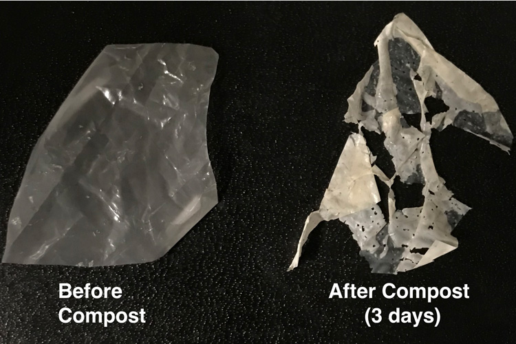
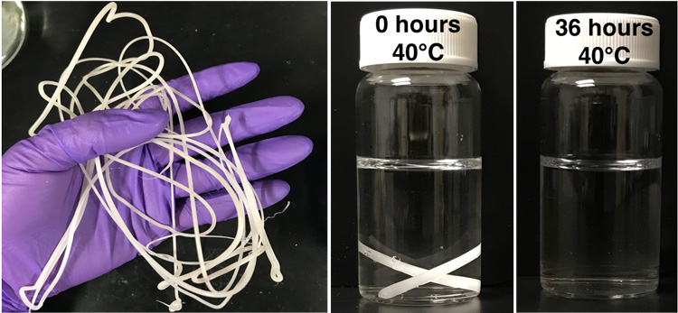
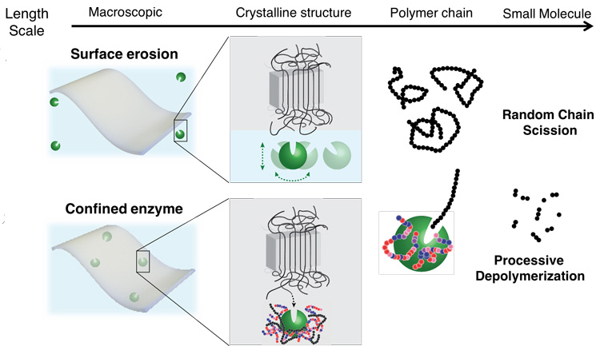
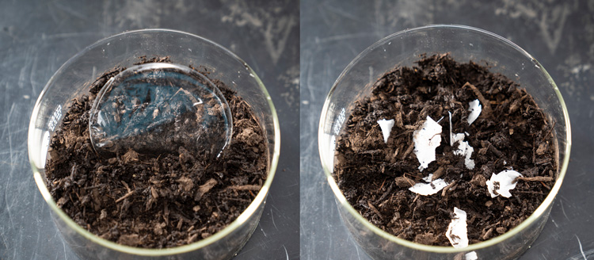
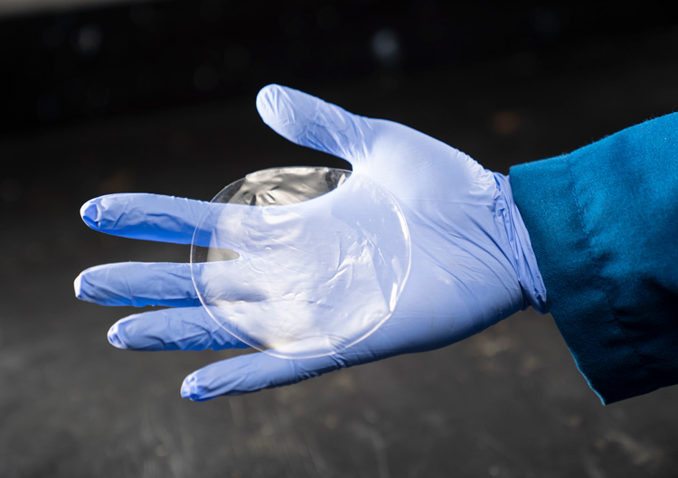

Biodegradable Plastic and its Future Usage

Biodegradable plastics have been advertised as one solution to the plastic pollution problem bedeviling
the world, but today’s “compostable” plastic bags, utensils and cup lids don’t break down
during typical composting and contaminate other recyclable plastics, creating headaches for recyclers.
Most compostable plastics, made primarily of the polyester known as polylactic acid, or PLA, end up
in landfills and last as long as forever plastics.
University of California, Berkeley, scientists have now invented a way to make these compostable
plastics break down more easily, with just heat and water, within a few weeks, solving a problem
that has flummoxed the plastics industry and environmentalists.
“People are now prepared to move into biodegradable polymers for single-use plastics, but if it
turns out that it creates more problems than it’s worth, then the policy might revert back,”
said Ting Xu, UC Berkeley professor of materials science and engineering and of chemistry.
“We are basically saying that we are on the right track. We can solve this continuing problem
of single-use plastics not being biodegradable.”
Xu is the senior author of a paper describing the process that will appear in this week’s issue
of the journal Nature.
The new technology should theoretically be applicable to other types of polyester plastics, perhaps
allowing the creation of compostable plastic containers, which currently are made of polyethylene,
a type of polyolefin that does not degrade. Xu thinks that polyolefin plastics are best turned into
higher value products, not compost, and is working on ways to transform recycled polyolefin plastics
for reuse.

The new process involves embedding polyester-eating enzymes in the plastic as it’s made. These enzymes
are protected by a simple polymer wrapping that prevents the enzyme from untangling and becoming useless.
When exposed to heat and water, the enzyme shrugs off its polymer shroud and starts chomping the plastic
polymer into its building blocks — in the case of PLA, reducing it to lactic acid, which can feed the
soil microbes in compost. The polymer wrapping also degrades.
The process eliminates microplastics, a byproduct of many chemical degradation processes and a pollutant
in its own right. Up to 98% of the plastic made using Xu’s technique degrades into small molecules.
Making Plastic Self Distruct
Plastics are designed not to break down during normal use, but that also means they don’t break down after
they’re discarded. The most durable plastics have an almost crystal-like molecular structure, with polymer
fibers aligned so tightly that water can’t penetrate them, let alone microbes that might chew up the polymers,
which are organic molecules.

Xu’s idea was to embed nanoscale polymer-eating enzymes directly in a plastic or other material in a way that
sequesters and protects them until the right conditions unleash them. In 2018, she showed how this works in
practice. She and her UC Berkeley team embedded in a fiber mat an enzyme that degrades toxic organophosphate
chemicals, like those in insecticides and chemical warfare agents. When the mat was immersed in the chemical,
the embedded enzyme broke down the organophosphate.
Her key innovation was a way to protect the enzyme from falling apart, which proteins typically do outside of
their normal environment, such as a living cell. She designed molecules she called random heteropolymers, or RHPs,
that wrap around the enzyme and gently hold it together without restricting its natural flexibility. The RHPs are
composed of four types of monomer subunits, each with chemical properties designed to interact with chemical groups
on the surface of the specific enzyme. They degrade under ultraviolet light and are present at a concentration of
less than 1% of the weight of the plastic — low enough not to be a problem.
For the research reported in the Nature paper, Xu and her team used a similar technique, enshrouding the enzyme in
RHPs and embedding billions of these nanoparticles throughout plastic resin beads that are the starting point for
all plastic manufacturing. She compares this process to embedding pigments in plastic to color them. The researchers
showed that the RHP-shrouded enzymes did not change the character of the plastic, which could be melted and extruded
into fibers like normal polyester plastic at temperatures around 170 degrees Celsius, or 338 degrees Fahrenheit.

To trigger degradation, it was necessary only to add water and a little heat. At room temperature, 80% of the modified
PLA fibers degraded entirely within about one week. Degradation was faster at higher temperatures. Under industrial
composting conditions, the modified PLA degraded within six days at 50 degrees Celsius (122 F). Another polyester plastic,
PCL (polycaprolactone), degraded in two days under industrial composting conditions at 40 degrees Celsius (104 F). For PLA,
she embedded an enzyme called proteinase K that chews PLA up into molecules of lactic acid; for PCL, she used lipase.
Both are inexpensive and readily available enzymes.
“If you have the enzyme only on the surface of the plastic, it would just etch down very slowly,” Xu said. “You want it distributed
nanoscopically everywhere so that, essentially, each of them just needs to eat away their polymer neighbors, and then the whole material
disintegrates.”
Composting
The quick degradation works well with municipal composting, which typically takes 60 to 90 days to turn food and plant waste into usable compost.
Industrial composting at high temperatures takes less time, but the modified polyesters also break down faster at these temperatures.

Xu suspects that higher temperatures make the enshrouded enzyme move around more, allowing it to more quickly find the end of a polymer chain and chew it up and then move on to the next chain. The RHP-wrapped enzymes also tend to bind near the ends of polymer chains, keeping the enzymes near their targets.
The modified polyesters do not degrade at lower temperatures or during brief periods of dampness, she said. A polyester shirt made with this process would withstand sweat and washing at moderate temperatures, for example. Soaking in water for three months at room temperature did not cause the plastic to degrade.
Soaking in lukewarm water does lead to degradation, as she and her team demonstrated.
“It turns out that composting is not enough — people want to compost in their home without getting their hands dirty, they want to compost in water,” she said. “So, that is what we tried to see. We used warm tap water. Just warm it up to the right temperature, then put it in, and we see in a few days it disappears.”
Xu is developing RHP-wrapped enzymes that can degrade other types of polyester plastic, but she also is modifying the RHPs so that the degradation can be programmed to stop at a specified point and not completely destroy the material. This might be useful if the plastic were to be remelted and turned into new plastic.
The project is in part supported by the Department of Defense’s Army Research Office, an element of the U.S. Army Combat Capabilities Development Command’s Army Research Laboratory.
“These results provide a foundation for the rational design of polymeric materials that could degrade over relatively short timescales, which could provide significant advantages for Army logistics related to waste management,” said Stephanie McElhinny, Ph.D., program manager with the Army Research Office. “More broadly, these results provide insight into strategies for the incorporation of active biomolecules into solid-state materials, which could have implications for a variety of future Army capabilities, including sensing, decontamination and self-healing materials.”
“It is good for millennials to think about this and start a conversation that will change the way we interface with Earth,” Xu said. “Look at all the wasted stuff we throw away: clothing, shoes, electronics like cellphones and computers. We are taking things from the earth at a faster rate than we can return them. Don’t go back to Earth to mine for these materials, but mine whatever you have, and then convert it to something else.”
Co-authors of the paper include Christopher DelRe, Yufeng Jiang, Philjun Kang, Junpyo Kwon, Aaron Hall, Ivan Jayapurna, Zhiyuan Ruan, Le Ma, Kyle Zolkin, Tim Li and Robert Ritchie of UC Berkeley; Corinne Scown of Berkeley Lab; and Thomas Russell of the University of Massachusetts in Amherst. The work was funded primarily by the U.S. Department of Energy (DE-AC02-05-CH11231), with assistance from the Army Research Office and UC Berkeley’s Bakar Fellowship program.
History and Future of Plastic :
What Are Plastics and Where Do They Come From?
Plastic is a word that originally meant “pliable and easily shaped.” It only recently became a name for a category of materials called polymers. The word polymer means “of many parts,” and polymers are made of long chains of molecules. Polymers abound in nature. Cellulose, the material that makes up the cell walls of plants, is a very common natural polymer.
Over the last century and a half humans have learned how to make synthetic polymers, sometimes using natural substances like cellulose, but more often using the plentiful carbon atoms provided by petroleum and other fossil fuels. Synthetic polymers are made up of long chains of atoms, arranged in repeating units, often much longer than those found in nature. It is the length of these chains, and the patterns in which they are arrayed, that make polymers strong, lightweight, and flexible. In other words, it’s what makes them so plastic.
These properties make synthetic polymers exceptionally useful, and since we learned how to create and manipulate them, polymers have become an essential part of our lives. Especially over the last 50 years plastics have saturated our world and changed the way that we live.
The First Synthetic Plastic
The first synthetic polymer was invented in 1869 by John Wesley Hyatt, who was inspired by a New York firm’s offer of $10,000 for anyone who could provide a substitute for ivory. The growing popularity of billiards had put a strain on the supply of natural ivory, obtained through the slaughter of wild elephants. By treating cellulose, derived from cotton fiber, with camphor, Hyatt discovered a plastic that could be crafted into a variety of shapes and made to imitate natural substances like tortoiseshell, horn, linen, and ivory.
This discovery was revolutionary. For the first time human manufacturing was not constrained by the limits of nature. Nature only supplied so much wood, metal, stone, bone, tusk, and horn. But now humans could create new materials. This development helped not only people but also the environment. Advertisements praised celluloid as the savior of the elephant and the tortoise. Plastics could protect the natural world from the destructive forces of human need.
The creation of new materials also helped free people from the social and economic constraints imposed by the scarcity of natural resources. Inexpensive celluloid made material wealth more widespread and obtainable. And the plastics revolution was only getting started.
The Development of New Plastics
In 1907 Leo Baekeland invented Bakelite, the first fully synthetic plastic, meaning it contained no molecules found in nature. Baekeland had been searching for a synthetic substitute for shellac, a natural electrical insulator, to meet the needs of the rapidly electrifying United States. Bakelite was not only a good insulator; it was also durable, heat resistant, and, unlike celluloid, ideally suited for mechanical mass production. Marketed as “the material of a thousand uses,” Bakelite could be shaped or molded into almost anything, providing endless possibilities.
Hyatt’s and Baekeland’s successes led major chemical companies to invest in the research and development of new polymers, and new plastics soon joined celluloid and Bakelite. While Hyatt and Baekeland had been searching for materials with specific properties, the new research programs sought new plastics for their own sake and worried about finding uses for them later.
Plastics Come of Age
World War II necessitated a great expansion of the plastics industry in the United States, as industrial might proved as important to victory as military success. The need to preserve scarce natural resources made the production of synthetic alternatives a priority. Plastics provided those substitutes. Nylon, invented by Wallace Carothers in 1935 as a synthetic silk, was used during the war for parachutes, ropes, body armor, helmet liners, and more. Plexiglas provided an alternative to glass for aircraft windows. A Time magazine article noted that because of the war, “plastics have been turned to new uses and the adaptability of plastics demonstrated all over again.”[1] During World War II plastic production in the United States increased by 300%.
The surge in plastic production continued after the war ended. After experiencing the Great Depression and then World War II, Americans were ready to spend again, and much of what they bought was made of plastic. According to author Susan Freinkel, “In product after product, market after market, plastics challenged traditional materials and won, taking the place of steel in cars, paper and glass in packaging, and wood in furniture.”[2] The possibilities of plastics gave some observers an almost utopian vision of a future with abundant material wealth thanks to an inexpensive, safe, sanitary substance that could be shaped by humans to their every whim.
Plastic Problems: Waste and Health
Plastic’s reputation fell further in the 1970s and 1980s as anxiety about waste increased. Plastic became a special target because, while so many plastic products are disposable, plastic lasts forever in the environment. It was the plastics industry that offered recycling as a solution. In the 1980s the plastics industry led an influential drive encouraging municipalities to collect and process recyclable materials as part of their waste-management systems. However, recycling is far from perfect, and most plastics still end up in landfills or in the environment. Grocery-store plastic bags have become a target for activists looking to ban one-use, disposable plastics, and several American cities have already passed bag bans. The ultimate symbol of the problem of plastic waste is the Great Pacific Garbage Patch, which has often been described as a swirl of plastic garbage the size of Texas floating in the Pacific Ocean.
The reputation of plastics has suffered further thanks to a growing concern about the potential threat they pose to human health. These concerns focus on the additives (such as the much-discussed bisphenol A [BPA] and a class of chemicals called phthalates) that go into plastics during the manufacturing process, making them more flexible, durable, and transparent. Some scientists and members of the public are concerned about evidence that these chemicals leach out of plastics and into our food, water, and bodies. In very high doses these chemicals can disrupt the endocrine (or hormonal) system. Researchers worry particularly about the effects of these chemicals on children and what continued accumulation means for future generations.
The Future of Plastics
Despite growing mistrust, plastics are critical to modern life. Plastics made possible the development of computers, cell phones, and most of the lifesaving advances of modern medicine. Lightweight and good for insulation, plastics help save fossil fuels used in heating and in transportation. Perhaps most important, inexpensive plastics raised the standard of living and made material abundance more readily available. Without plastics many possessions that we take for granted might be out of reach for all but the richest Americans. Replacing natural materials with plastic has made many of our possessions cheaper, lighter, safer, and stronger.
Since it’s clear that plastics have a valuable place in our lives, some scientists are attempting to make plastics safer and more sustainable. Some innovators are developing bioplastics, which are made from plant crops instead of fossil fuels, to create substances that are more environmentally friendly than conventional plastics. Others are working to make plastics that are truly biodegradable. Some innovators are searching for ways to make recycling more efficient, and they even hope to perfect a process that converts plastics back into the fossil fuels from which they were derived. All of these innovators recognize that plastics are not perfect but that they are an important and necessary part of our future.